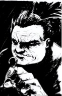

Selecione um personagem
-

- 
-

Morpheus
Sonho dos Perpétuos... Este sim é um verdadeiro enigma. Ele é magro e esguio, com pele pálida como a neve. Sonho acumula nomes para si da mesma forma que outros fazem amigos; mas raros são os que recebem tal título. De todos os Perpétuos, exceto Destino (quem sabe?), é o mais consciente e meticuloso na execução de suas responsabilidades.